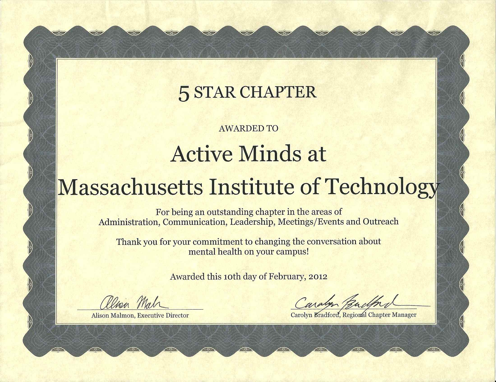

Fall 2013 Announcements:
Active Minds at MIT has a Facebook page! Like us here:
Speak Your Mind campaign is in full swing! Visit our SYM Blog to keep updated on your peers' stories on dealing with mental health issues.
 Active Minds at MIT has been recognized as a 5-star chapter by the National Active Minds Organization! That is the highest rating a chapter can earn, and this is the first time our chapter has been recognized as 5-star. We'll be sure to continue our events during the 2012-2013 school year to try and maintain our 5-star rating!
We are very pleased to announce that Active Minds at MIT has won a Dare to Dream America Grant for $1000! Learn more about the Dare to Dream America program and see the list of winners!
Active Minds at MIT is…
Contact us at activeminds-exec@mit.edu !
Active Minds at MIT welcomes all members, regardless of class year, gender, race, citizenship or any other affiliation.
Visit the national organization website at http://www.activeminds.org